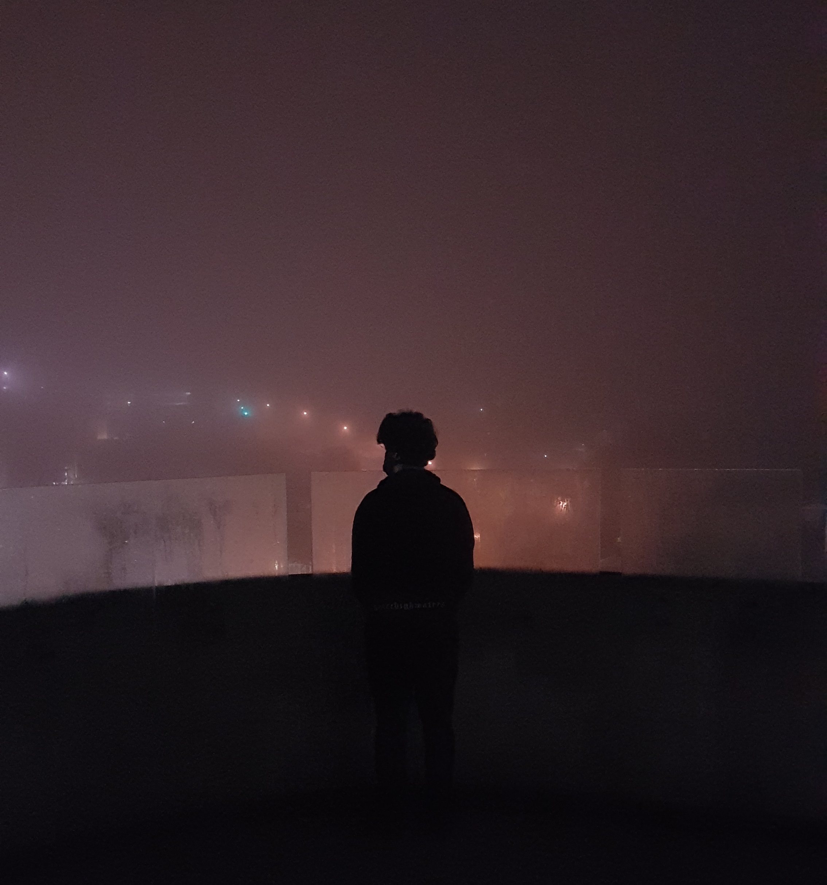
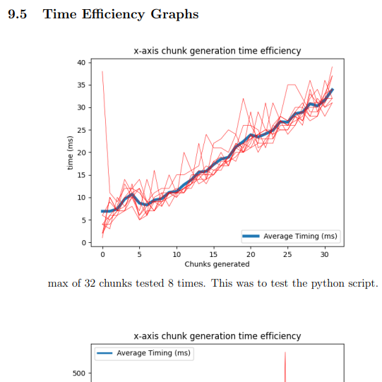

My focus is quite broad and revolves around using multimedia as an artform.
By combining visual media and programming with some niches (such as kinetic typography), I believe a unique set of projects can be made and shared.
Inspiration comes from various sources; music, content creators, friends, games, and just weird corners of the internet at times.
Currently, Motion Graphics (moreso kinetic typography) is where I've been spending most of my time. You can see some of my work on my youtube (and on this site in the future)
University has been a journey and has given me the opportunity to explore different avenues of creative media. As a software technologies major, subjects such as Parrellization, tiling, Agent navigations, pathing algorithms, and more have been very exciting for me to engage in and further my skillsets with.

It will be, just not for submission. I don't particularly want a section for university to be combined with my personal endeavours.
Although I do have a variety of university projects to show, I want this portfolio to eventually be a place for me to share my creative work outside of assessed items. So for now, university projects are showcased and in future, my other projects will be.
Some of my upcoming units include data visualisation & information design and programming paradigms in which I am excited to explore potential correlations between the two.
Once adding motion graphics and personal projects, I also plan to expand this portfolio over time and include multiple areas outside of motion graphics.